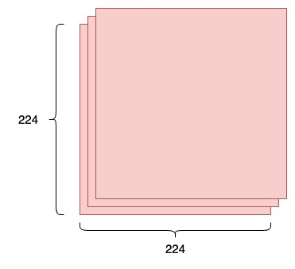
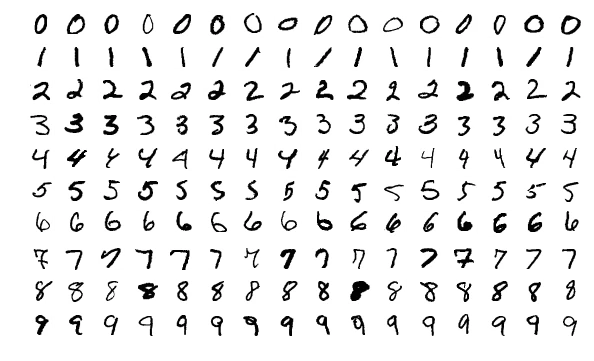
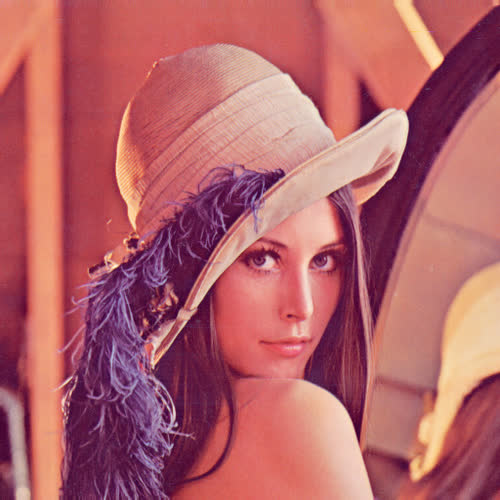
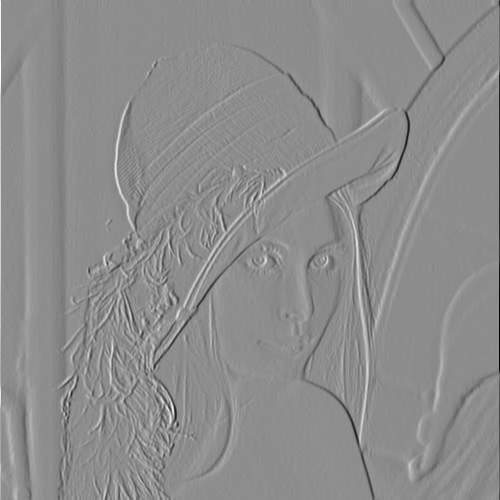
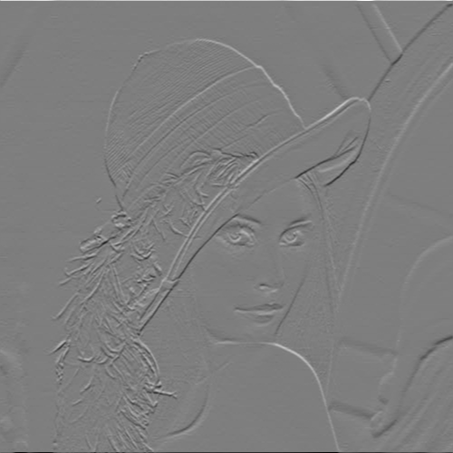
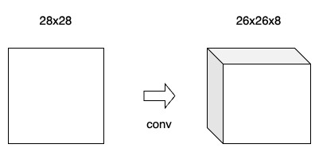
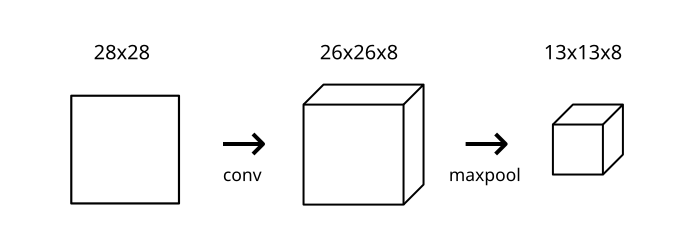
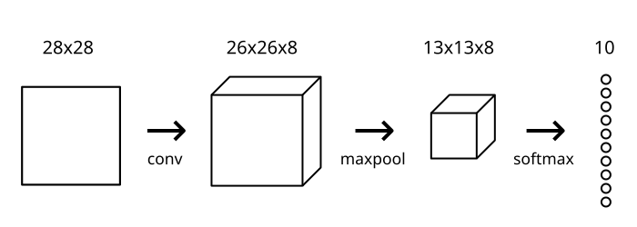

3.1 CNN from Stratch
A simple guide to what CNNs are, how they work, and how to build one from scratch in Python.
Created Date: 2025-05-11
There’s been a lot of buzz about Convolution Neural Networks (CNNs) in the past few years, especially because of how they’ve revolutionized the field of Computer Vision. In this post, we’ll build on a basic background knowledge of neural networks and explore what CNNs are, understand how they work, and build a real one from scratch (using only NumPy) in Python.
This post assumes only a basic knowledge of neural networks. Section 1.7 Neural Network from Scratch covers everything you’ll need to know, so you might want to read that first.
Ready? Let’s jump in.
3.1.1 Motivation
A classic use case of CNNs is to perform image classification, e.g. looking at an image of a pet and deciding whether it’s a cat or a dog. It’s a seemingly simple task - why not just use a normal Neural Network?
Good question.
Reason 1: Images are Big
Images used for Computer Vision problems nowadays are often \(224 \times 224\) or larger. Imagine building a neural network to process \(224 \times 224\) color images: including the 3 color channels (RGB) in the image, that comes out to \(224 \times 224 \times 3 = 150528\) input features!

Figure 1 - Image of Size \(224 \times 224 \times 3\)
A typical hidden layer in such a network might have 1024 nodes, so we'd have to train \(150528 \times 1024 = 150+\) million weights for the first layer alone. Our network would be huge and nearly impossible to train.
It’s not like we need that many weights, either. The nice thing about images is that we know pixels are most useful in the context of their neighbors. Objects in images are made up of small, localized features, like the circular iris of an eye or the square corner of a piece of paper. Doesn’t it seem wasteful for every node in the first hidden layer to look at every pixel?
Reason 2: Positions can change
If you trained a network to detect dogs, you’d want it to be able to a detect a dog regardless of where it appears in the image. Imagine training a network that works well on a certain dog image, but then feeding it a slightly shifted version of the same image. The dog would not activate the same neurons, so the network would react completely differently!
We’ll see soon how a CNN can help us mitigate these problems.
3.1.2 Dataset
In this post, we’ll tackle the "Hello, World!" of Computer Vision: the MNIST handwritten digit classification problem. It’s simple: given an image, classify it as a digit.

Figure 2 - Sample Images from the MNIST Dataset
Each image in the MNIST dataset is \(28 \times 28\) and contains a centered, grayscale digit.
Truth be told, a normal neural network would actually work just fine for this problem. You could treat each image as a \(28 \times 28 = 784\) - dimensional vector, feed that to a 784-dim input layer, stack a few hidden layers, and finish with an output layer of 10 nodes, 1 for each digit.
This would only work because the MNIST dataset contains small images that are centered, so we wouldn’t run into the aforementioned issues of size or shifting. Keep in mind throughout the course of this post, however, that most real-world image classification problems aren’t this easy.
Enough buildup. Let’s get into CNNs!
3.1.3 Convolutions
What are Convolutional Neural Networks?
They’re basically just neural networks that use Convolutional layers, a.k.a. Conv layers, which are based on the mathematical operation of convolution. Conv layers consist of a set of filters, which you can think of as just 2d matrices of numbers. Here’s an example \(3 \times 3\) filter:
| -1 | 0 | 1 |
| -2 | 0 | 2 |
| -1 | 0 | 1 |
Figure 3 - A \(3 \times 3\) filter
We can use an input image and a filter to produce an output image by convolving the filter with the input image. This consists of:
Overlaying the filter on top of the image at some location.
Performing element-wise multiplication between the values in the filter and their corresponding values in the image.
Summing up all the element-wise products. This sum is the output value for the destination pixel in the output image.
Repeating for all locations.
Side Note: We (along with many CNN implementations) are technically actually using cross-correlation instead of convolution here, but they do almost the same thing. I won’t go into the difference in this post because it’s not that important, but feel free to look this up if you’re curious.
That 4-step description was a little abstract, so let’s do an example. Consider this tiny \(4 \times 4\) grayscale image and this \(3 \times 3\) filter:
| 0 | 50 | 0 | 29 |
| 0 | 80 | 31 | 2 |
| 33 | 90 | 0 | 75 |
| 0 | 9 | 0 | 95 |
Figure 4 - A \(4 \times 4\) image
The numbers in the image represent pixel intensities, where 0 is black and 255 is white. We’ll convolve the input image and the filter to produce a 2x2 output image:
| ? | ? |
| ? | ? |
Figure 5 - A \(2 \times 2\) output image
To start, lets overlay our filter in the top left corner of the image:
| 0x-1 | 50x0 | 0x1 | 29 |
| 0x-2 | 80x0 | 31x2 | 2 |
| -33 | 90x0 | 0x1 | 75 |
| 0 | 9 | 0 | 95 |
Figure 6 - Overlay the filter on top of the image
Next, we perform element-wise multiplication between the overlapping image values and filter values. Here are the results, starting from the top left corner and going right, then down. We sum up all the results, hat’s easy enough:
Finally, we place our result in the destination pixel of our output image. Since our filter is overlayed in the top left corner of the input image, our destination pixel is the top left pixel of the output image. We do the same thing to generate the rest of the output image:
| 29 | -192 |
| -35 | -22 |
Figure 7 - Final Output
3.1.3.1 How is This Useful?
Let’s zoom out for a second and see this at a higher level. What does convolving an image with a filter do? We can start by using the example \(3 \times 3\) filter we’ve been using, which is commonly known as the vertical Sobel filter:

Figure 8 - Standard Test Image
File sobel_filter.py is an example of what the vertical Sobel filter does:

Figure 9 - An Image Convolved with the Vertical Sobel Filter
Similarly, there’s also a horizontal Sobel filter:
| 1 | 2 | 1 |
| 0 | 0 | 0 |
| -1 | -2 | -1 |
Figure 10 - The Horizontal Sobel Filter
See what’s happening? Sobel filters are edge-detectors. The vertical Sobel filter detects vertical edges, and the horizontal Sobel filter detects horizontal edges. The output images are now easily interpreted: a bright pixel (one that has a high value) in the output image indicates that there’s a strong edge around there in the original image.

Figure 11 - An Image Convolved with the Horizontal Sobel Filter
Can you see why an edge-detected image might be more useful than the raw image? Think back to our MNIST handwritten digit classification problem for a second. A CNN trained on MNIST might look for the digit 1, for example, by using an edge-detection filter and checking for two prominent vertical edges near the center of the image. In general, convolution helps us look for specific localized image features (like edges) that we can use later in the network.
3.1.3.2 Padding
Remember convolving a \(4 \times 4\) input image with a \(3 \times 3\) filter earlier to produce a \(2 \times 2\) output image? Often times, we’d prefer to have the output image be the same size as the input image. To do this, we add zeros around the image so we can overlay the filter in more places. A \(3 \times 3\) filter requires 1 pixel of padding:
| 0 | 0 | 0 | 0 | 0 | 0 |
| 0 | 0 | 50 | 0 | 29 | 0 |
| 0 | 0 | 80 | 31 | 2 | 0 |
| 0 | 33 | 90 | 0 | 75 | 0 |
| 0 | 0 | 9 | 0 | 95 | 0 |
| 0 | 0 | 0 | 0 | 0 | 0 |
Figure 12 - A \(4 \times 4\) Input Convolved with a \(3 \times 3\) Filter
This is called "same" padding, since the input and output have the same dimensions. Not using any padding, which is what we’ve been doing and will continue to do for this post, is sometimes referred to as "valid" padding.
3.1.3.3 Conv Layers
Now that we know how image convolution works and why it’s useful, let’s see how it’s actually used in CNNs. As mentioned before, CNNs include conv layers that use a set of filters to turn input images into output images. A conv layer’s primary parameter is the number of filters it has.
For our MNIST CNN, we'll use a small conv layer with 8 filters as the initial layer in our network. This means it’ll turn the \(28 \times 28\) input image into a \(26 \times 26 \times 8\) output volume:

Figure 13 - Simple Conv Layer
Reminder: The output is \(26 \times 26 \times 8\) and not \(28 \times 28 \times 8\) because we’re using valid padding, which decreases the input’s width and height by 2.
Each of the 8 filters in the conv layer produces a \(26 \times 26\) output, so stacked together they make up a \(26 \times 26 \times 8\) volume. All of this happens because of \(3 \times 3\) (filter size) \(\times\) 8 (number of filters) = only 72 weights!
3.1.3.4 Implementing Convolution
Time to put what we’ve learned into code! We’ll implement a conv layer’s feedforward portion, which takes care of convolving filters with an input image to produce an output volume. For simplicity, we’ll assume filters are always 3x3 (which is not true - 5x5 and 7x7 filters are also very common).
File conv.py implementing a conv layer class:
class Conv3x3:
# A Convolution layer using 3x3 filters.
def __init__(self, num_filters):
self.num_filters = num_filters
# filters is a 3d array with dimensions (num_filters, 3, 3)
# We divide by 9 to reduce the variance of our initial values
self.filters = numpy.random.randn(num_filters, 3, 3) / 9The Conv3x3 class takes only one argument: the number of filters. In the constructor, we store the number of filters and initialize a random filters array using NumPy’s random.randn() method.
Note: Diving by 9 during the initialization is more important than you may think. If the initial values are too large or too small, training the network will be ineffective.
Next, the actual convolution:
class Conv3x3:
# ...
def iterate_regions(self, image):
'''
Generates all possible 3x3 image regions using valid padding.
- image is a 2d numpy array
'''
h, w = image.shape
for i in range(h - 2):
for j in range(w - 2):
im_region = image[i:(i+3), j:(j+3)]
yield im_region, i, j
def forward(self, input):
'''
Performs a forward pass of the conv layer using the given input.
Returns a 3d numpy array with dimensions (h, w, num_filters).
- input is a 2d numpy array
'''
h, w = input.shape
output = numpy.zeros((h - 2, w - 2, self.num_filters))
for im_region, i, j in self.iterate_regions(input):
output[i, j] = numpy.sum(im_region * self.filters, axis=(1, 2))
return outputiterate_regions() is a helper generator method that yields all valid \(3 \times 3\) image regions for us. This will be useful for implementing the backwards portion of this class later on.
The line of code that actually performs the convolutions is highlighted above. Let’s break it down:
We have
im_region, a \(3 \times 3\) array containing the relevant image region.We have
self.fitlers, a 3d array.We do
im_region * self.filters, which uses NumPy's broadcasting feature to element-wise multiply the two arrays. The result is a 3d array with the same dimension asself.filters.We numpy.sum() the result of the previous step using
axis=(1, 2), which produces a 1d array of lengthnum_filterswhere each element contains the convolution result for the corresponding filter.We assign the result to
output[i, j], which contains convolution results for pixel(i, j)in the output.
The sequence above is performed for each pixel in the output until we obtain our final output volume! Let’s give our code a test run:
(x_train, y_train), (x_test, y_test) = mnist.load()
conv = Conv3x3(8)
output = conv.forward(x_train[0])
assert output.shape == (26, 26, 8)Looks good so far.
3.1.4 Pooling
Neighboring pixels in images tend to have similar values, so conv layers will typically also produce similar values for neighboring pixels in outputs. As a result, much of the information contained in a conv layer’s output is redundant.
For example, if we use an edge-detecting filter and find a strong edge at a certain location, chances are that we’ll also find relatively strong edges at locations 1 pixel shifted from the original one. However, these are all the same edge! We’re not finding anything new.
Pooling layers solve this problem. All they do is reduce the size of the input it’s given by (you guessed it) pooling values together in the input. The pooling is usually done by a simple operation like max, min, or average. Here’s an example of a Max Pooling layer with a pooling size of 2:
| 0 | 50 | 0 | 29 |
| 0 | 80 | 31 | 2 |
| 33 | 90 | 0 | 75 |
| 0 | 9 | 0 | 95 |
| 80 | 31 |
| 90 | 95 |
Figure 14 - Max Pooling
To perform max pooling, we traverse the input image in 2x2 blocks (because pool size = 2) and put the max value into the output image at the corresponding pixel. That’s it!
Pooling divides the input’s width and height by the pool size. For our MNIST CNN, we’ll place a Max Pooling layer with a pool size of 2 right after our initial conv layer. The pooling layer will transform a 26x26x8 input into a 13x13x8 output:

Figure 15 - Max Pooling Layer
File max_pool.py implement a MaxPool2 class with the same methods as our conv class from the previous section:
class MaxPool2:
# A Max Pooling layer with a 2x2 filter.
def iterate_regions(self, image):
'''
Generates non-overlapping 2x2 image regions to pool over.
- image is a 2d numpy array
'''
h, w, _ = image.shape
new_h = h // 2
new_w = w // 2
for i in range(new_h):
for j in range(new_w):
im_region = image[(i * 2):(i * 2 + 2), (j * 2):(j * 2 + 2)]
yield im_region, i, j
def forward(self, input):
'''
Performs a forward pass of the maxpool layer using the given input.
Returns a 3d numpy array with dimensions (h / 2, w / 2, num_filters).
- input is a 3d numpy array with dimensions (h, w, num_filters)
'''
h, w, num_filters = input.shape
output = numpy.zeros((h // 2, w // 2, num_filters))
for im_region, i, j in self.iterate_regions(input):
output[i, j] = numpy.amax(im_region, axis=(0, 1))
return outputThis class works similarly to the Conv3x3 class we implemented previously. The critical line is again highlighted: to find the max from a given image region, we use numpy.amax(), NumPy's array max method. We set axis=(0, 1) because we only want to maximize over the first two dimensions, height and width, and not the third num_filters.
Let’s test it:
(x_train, y_train), (x_test, y_test) = mnist.load()
conv = Conv3x3(8)
pool = MaxPool2()
output = conv.forward(x_train[0])
output = pool.forward(output)
assert output.shape == (13, 13, 8)Our MNIST CNN is starting to come together!
3.1.5 Softmax
To complete our CNN, we need to give it the ability to actually make predictions. We’ll do that by using the standard final layer for a multiclass classification problem: the Softmax layer, a fully-connected (dense) layer that uses the softmax function as its activation.
3.1.5.1 Usage
We’ll use a softmax layer with 10 nodes, one representing each digit, as the final layer in our CNN. Each node in the layer will be connected to every input. After the softmax transformation is applied, the digit represented by the node with the highest probability will be the output of the CNN!

Figure 16 - Softmax Layer
3.1.5.2 Cross-Entropy Loss
You might have just thought to yourself, why bother transforming the outputs into probabilities? Won’t the highest output value always have the highest probability? If you did, you’re absolutely right. We don’t actually need to use softmax to predict a digit - we could just pick the digit with the highest output from the network!
What softmax really does is help us quantify how sure we are of our prediction, which is useful when training and evaluating our CNN. More specifically, using softmax lets us use cross-entropy loss, which takes into account how sure we are of each prediction. Here’s how we calculate cross-entropy loss:
where \(c\) is the correct class (in our case, the correct digit), \(p_c\) is the predicted probability for class \(c\), and \(ln\) is the natural log. As always, a lower loss is better. For example, in the best case, we’d have:
In a more realistic case, we might have:
We’ll be seeing cross-entropy loss again later on in this post, so keep it in mind!
3.1.5.3 Implementing Softmax
You know the drill by now - File softmax.py implement a Softmax layer class:
class Softmax:
# A standard fully-connected layer with softmax activation.
def __init__(self, input_len, nodes):
# We divide by input_len to reduce the variance of our initial values.
self.weights = numpy.random.randn(input_len, nodes) / input_len
self.bias = numpy.zeros(nodes)
def forward(self, input):
'''
Performs a forward pass of the softmax layer using the given input.
Returns a 1d numpy array containing the respective probability values.
- input can be any array with any dimensions.
'''
input = input.flatten()
input_len, nodes = self.weights.shape
totals = numpy.dot(input, self.weights) + self.bias
exp = numpy.exp(totals)
return exp / numpy.sum(exp, axis=0)There’s nothing too complicated here. A few highlights:
flatten()the input to make it easier to work with, since we no longer need its shape.numpy.dot()multipliesinputandself.weightselement-wise and then sums the results.numpy.exp()calculates the exponentials used for Softmax.
We’ve now completed the entire forward pass of our CNN! File cnn_forward.py putting it together:
(x_train, y_train), (x_test, y_test) = mnist.load()
conv = Conv3x3(8) # 28x28x1 -> 26x26x8
pool = MaxPool2() # 26x26x8 -> 13x13x8
softmax = Softmax(13 * 13 * 8, 10) # 13x13x8 -> 10
def forward(input, label):
'''
Completes a forward pass of the CNN and calculates the accuracy and
cross-entropy loss.
- image is a 2d numpy array
- label is a digit
'''
# We transform the image from [0, 255] to [-0.5, 0.5] to make it easier
# to work with. This is standard practice.
out = conv.forward(input / 255 - 0.5)
out = pool.forward(out)
out = softmax.forward(out)
# Calculate cross-entropy loss and accuracy. np.log() is the natural log.
loss = -numpy.log(out[label])
acc = 1 if numpy.argmax(out) == label else 0
return out, loss, acc
loss = 0
num_correct = 0
for i, (image, label) in enumerate(zip(x_test[:400], y_test[:400])):
out, l, acc = forward(image, label)
loss += l
num_correct += acc
if (i + 1) % 100 == 0:
print('Step' + str(i + 1) + ': loss = ' + str(round(loss / 100, 4)) +
', accuracy = ' + str(num_correct / 100))
loss = 0
num_correct = 0Running cnn_forward.py gives us output similar to this:
Step100: loss = 2.302, accuracy = 0.12 Step200: loss = 2.3025, accuracy = 0.09 Step300: loss = 2.302, accuracy = 0.14 Step400: loss = 2.3025, accuracy = 0.12
This makes sense: with random weight initialization, you’d expect the CNN to be only as good as random guessing. Random guessing would yield 10% accuracy (since there are 10 classes) and a cross-entropy loss of \(−ln(0.1) \approx 2.302\), which is what we get!
3.1.6 Training Overview
Training a neural network typically consists of two phases:
A forward phase, where the input is passed completely through the network.
A backward phase, where gradients are backpropagated (backprop) and weights are updated.
We’ll follow this pattern to train our CNN. There are also two major implementation-specific ideas we’ll use:
During the forward phase, each layer will cache any data (like inputs, intermediate values, etc) it’ll need for the backward phase. This means that any backward phase must be preceded by a corresponding forward phase.
During the backward phase, each layer will receive a gradient and also return a gradient. It will receive the gradient of loss with respect to its outputs \(\frac{\partial L}{\partial out}\) and return the gradient of loss with respect to its inputs \(\frac{\partial L}{\partial in}\)
These two ideas will help keep our training implementation clean and organized. The best way to see why is probably by looking at code. Training our CNN will ultimately look something like this:
# Feed forward
out = conv.forward((image / 255) - 0.5)
out = pool.forward(out)
out = softmax.forward(out)
# Calculate initial gradient
gradient = np.zeros(10)
# Backprop
gradient = softmax.backprop(gradient)
gradient = pool.backprop(gradient)
gradient = conv.backprop(gradient)See how nice and clean that looks? Now imagine building a network with 50 layers instead of 3 - it’s even more valuable then to have good systems in place.
3.1.7 Backprop: Softmax
We’ll start our way from the end and work our way towards the beginning, since that’s how backprop works. First, recall the cross-entropy loss:
where \(p_c\) is the predicted probability for the correct class \(c\) (in other words, what digit our current image actually is).